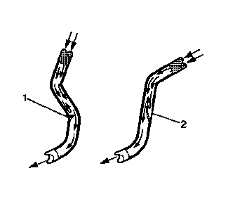

制动管和软管的检查
- 1.目视检查所有制动管是否存在以下状况：
- • 扭结、排布不正确、固定器缺失或损坏
- • 接头泄漏、严重腐蚀
- 2.如果有任何制动管出现上述状况，则需要更换相应的一个或多个制动管。
- 3.务必将车桥正确支撑在行驶高度，以保持挠性制动软管与底盘的相对位置正确。
-

4.目视检查所有挠性制动软管是否存在以下状况：
- • 扭结 (1)、排布不正确、扭曲、磨损、固定器缺失或损坏
- • 接头泄漏、开裂、腐蚀、起泡或鼓起
- 5.如果有任何挠性制动软管出现上述状况，则需要更换相应的一个或多个挠性制动软管。
- 6.用手指紧紧按压挠性制动软管，检查是否有软点 (2)（该现象表明有内部堵塞）。检查每个挠性制动软管的全长。
- 7.如果发现任何挠性制动软管有软点 (2)，则该挠性制动软管需要更换。